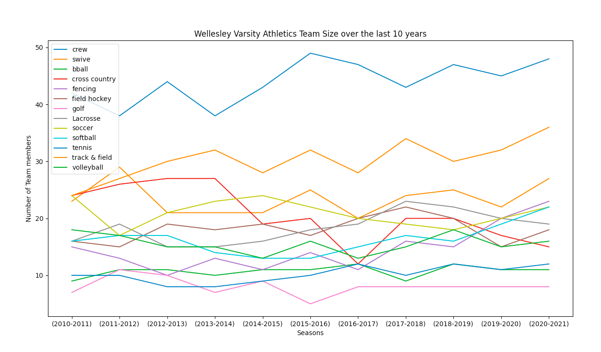
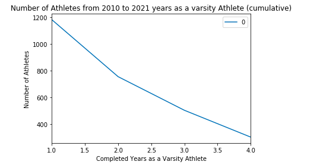
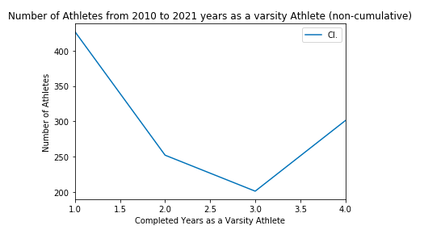
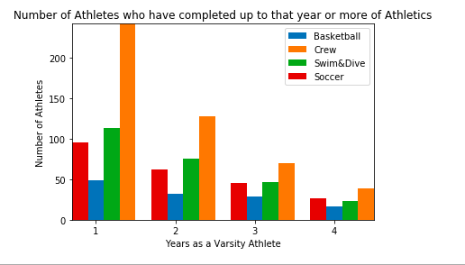

For the January Project, I scraped Wellesley Blue Website to analyze and look at Wellesley Varsity Rosters from the 2010-11 to 2020-21 seasons.
I used google sheets to scrape the rosters, and I used Selenium, a python library, to scrape the coaches information from the website. In my repository, you can find the csv files I made of the rosters, and a juypter notebook scraping the coaches information.
Below is a general overview graph of all the Varisty Team. It illustrates how the size of different teams have changed over the past 10 seasons.
Below is the number of athletes in all sports who have completed up to or more years as a varsity athlete at Wellesley. Student Athletes in multiple sports will be counted separately in each sport.
Above was the cumulative view. This is the non cumulative view and show the drop over the 4 years.
Above, we can generally see the trend that athletes drop sharply after the first year and then gradually drop. I not only looked at all sports, but I also investigated individual sports. Below is a graph depicting, 4 of the 12 sports at Wellesley trends cumulatively:
I hope to investigate this dataset further, and create some interactive graphs. I am also interested in comparing Wellesley data to other similar colleges in our NEWMAC conference.